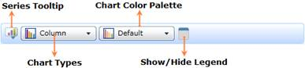
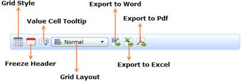

There are three toolbars in OLAP Client to provide the number of options to perform the different operations.
This toolbar contains menus to invoke the particular operation of OLAP Client.
Figure 33: OLAP Client Tool Bar
Table 5: OLAP Client Tool Bar
|
Icon |
Name |
Description |
Reference Link |
|
New Report |
Creates a new session to create the report |
||
|
Load Report |
Loads the reports from the saved XML file |
||
|
Save Report |
Saves the current session as an XML file |
||
|
Add Report |
Adds a new report to the current report set |
||
|
Remove Report |
Removes the selected report from the current report set |
||
|
Rename Report |
Renames the selected report in the current report set |
||
|
Report list |
Displays the reports in the current report set |
| |
|
Toggle Pivot |
Toggles the axis of the selected report |
- | |
|
Show/Hide expanders |
Shows/Hides the expanders of Chart and Grid controls of the selected report |
- |
OLAP Chart Tool Bar
By using the menus in the OLAP Chart Tool Bar, users can customize the appearance and style of the chart. Also, the user can change the type of the chart.

Figure 34: OLAP Chart Tool Bar
The following is the list of options in the OLAP Chart Tool Bar.
Table 6: OLAP Chart Tool Bar
|
Icon |
Name |
Description |
|
Show Legend |
Shows/Hides the legend of the chart | |
|
Chart Color Palette |
Displays the list of color palettes to change the current color of the chart | |
|
Chart Types |
Displays the list of chart types to change the current chart | |
|
Export Chart |
Exports the current visual of the chart as image |
By using the menus in the OLAP Grid Tool Bar, users can customize the appearance and style of the Grid.

Figure 35: OLAP Grid Tool Bar
The following are the options in the OLAP Grid Tool Bar.
Table 7: OLAP Grid Tool Bar
|
Icon |
Name |
Description |
|
Grid Style |
Displays the Grid Style Dialog to change the current style of the Grid | |
|
Show value cell tooltip |
Shows/Hides the value cell tool tip. | |
|
Freeze Headers |
Freezes the Header cells of the Grid | |
|
Grid Layout |
Lists the different types of grid layout to change the current layout | |
|
Export to Excel |
Exports the Grid to Excel | |
|
Export to word |
Exports the Grid to Word | |
|
Export to Pdf |
Exports the Grid to PDF |